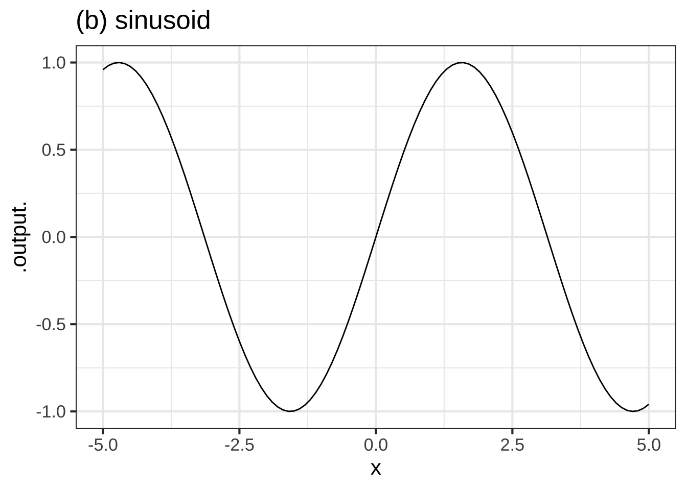
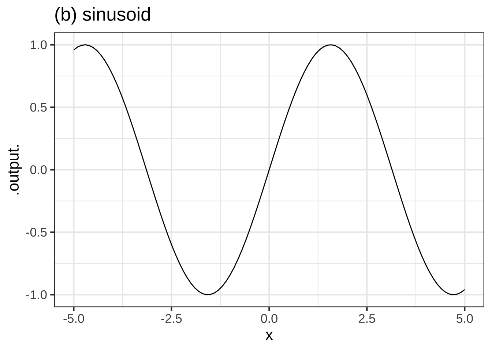

Chapter 4 Describing functions
We will need to communicate about functions to your fellow humans and to computers. Important modes of communication include:
- Graphs of functions that show their “shape”
- Tables of inputs and outputs
- Word descriptions
- Computer function name
- Mathematical notation
In this chapter, we’ll illustrate these five different modes using the naked modeling functions. It’s important to become proficient at all five.
4.1 Computer commands
We’ll start with computer commands that enable us to draw graphs.
To make a graph of a function with one input, use the slice_plot() command, like this:
slice_plot(exp(x) ~ x, domain(x=c(-2,2)))
You can simply copy-and-paste the command into a sandbox to create the graph. But let’s take apart the command into it’s components to see how R commands are structured.
slice_plot( ... )Commands usually start with the name of the operation to perform. The name is always followed by a pair of parentheses. Those parentheses will contain the arguments of the operation, which you can think of as specifying the details of what is to be done. Theslice_plot()operator draws graphs for functions of a single input.exp(x) ~ xis being given as the first argument to theslice_plot()operator. We’ll defer a detailed explanation, just pointing out that we are specifying to the computer that we want a plot of the exponential function and that we are going to usexas the name of the input.domain(x = c(-3,3))Functions have mathematical domains: the set of valid inputs to the function. The exponential function has the entire number line as the domain. To draw a function graph you need to specify the graphical domain, that is, which part of the function domain to show in the graph.
4.2 Tables of inputs and outputs
Another way of describing a function is to give a table of inputs and outputs. Like graphics, a table can only show some of the possible inputs.
| input | output |
|---|---|
| -1.00 | 0.3678794 |
| -0.75 | 0.4723666 |
| -0.50 | 0.6065307 |
| -0.25 | 0.7788008 |
| 0.00 | 1.0000000 |
| 0.25 | 1.2840254 |
| 0.50 | 1.6487213 |
Before modern computing, tables were one of the primary means to describe functions. People working with calculus needed a reference collection of books containing tables for the functions they used.
With computers, we have better and faster ways to get the output of a function from the input. Still, modelers often use recorded data to construct functions. Tables are perhaps the most widely used method for storing and accessing data, although electronic spreadsheets are used today instead of printed tables.
Even today, a table can be a nice way to describe a function when we are interested in the output from only a handful of the possible inputs.
Conceptually, it’s helpful to keep in mind that every naked modeling function is just a way of organizing information that could have been stored in a table.
4.3 Word descriptions
Knowing and correctly using a handful of phrases goes a long way in being able to communicate with other people about functions with a single input. Often, the words make sense in everyday speech (“steep,” “growing,” “decaying,” “goes up,” “goes down,” "flat).
Sometimes the words are used in everyday speech but the casual person isn’t sure exactly what they mean. For instance, you will often hear the phrase “growing exponentially.” The graph of the exponential function illustrates exactly this sort of growth: flat for small \(x\) and growing steadily steeper and steeper as \(x\) increases.
Still other words are best understood by those who learn calculus. “Concave up,” “concave down,” “approaching 0 asymptotically,” “continuous,” “discontinuous,” “smooth,” “having a minimum at …,” “having a minimum of …,” “approaching \(\infty\) asymptotically,” “having a vertical asymptote.”
To illustrate the patterns described by these phrases, consider the three naked modeling functions in Figure 4.1:
 

Figure 4.1: Three of the naked modeling functions: (a) exponential, (b) sinusoid, (c) power-law \(x^{-1}\).
- Concave
- The exponential is concave up everywhere in its domain.
- The sinusoid alternates back and forth between concave up and concave down.
- This particular power law \(x^{-1}\) is concave up for \(x > 0\) and concave down for \(x < 0\).
- Continuous
- The exponential is continuous everywhere in its domain.
- The sinusoid is continuous everywhere in its domain.
- The power law \(x^{-1}\) is discontinuous at \(x = 0\)
- Periodic. Only the sinusoid is periodic, that is, repeating the same shape over and over again.
- Asymptote.
- The exponential has a horizontal asymptote of zero as \(x \rightarrow -\infty\)
- The sinusoid has neither a vertical nor a horizontal asymptote.
- The power law \(x^{-1}\) has a vertical asymptote of \(\infty\) as \(x \rightarrow 0\) from the right, and of \(-\infty\) as \(x \rightarrow 0\) from the left.
- Maximum. Only the sinusoid has a maximum, that is, an input for which the output is larger than for any other nearby input. The sinusoid similarly has a minimum.
4.4 Computer function names
As you might expect, computer programmers and language developers have written software implementing several of the naked modeling functions: exp(), log(), sin(), dnorm(), and pnorm(). For these functions, the name tells everying, so far as the computer is concerned, that is needed to calculate the output from any given input.
Computer notation for the power-law and straight-line functions is different. It will be much easier to understand once you have seen how to create and name your own functions. The reason for this difference is that the power-law and straight-line functions are not quite naked. Both of them have parameters: the exponent in the power-law function and the slope and intercept in the straight-line function.
Why do you include the power-law and straight-line functions in the list of naked modeling functions when they are not naked?
We’re using the “naked modeling function” list to accomplish two things at the same time:
- To emphasize that in modeling real-world situations you should always expect that your functions will have parameters.
- To point out that a large fraction modeling situations can be handled by just a few function “shapes.”
To make the list of shapes in (ii) comprehensive, we’ve had to stretch the “naked” metaphor a bit.
4.5 Mathematical notation
You have grown up with traditional mathematical notation and have are likely familiar with the notation for several of the naked modeling functions: \(\ln x\), \(\sin x\), \(e^x\), \(x^p\) (as in \(x^2\) where \(p=2\) or \(\sqrt{x}\) where \(p=1/2\)).
Traditional notation mixes up several things that computer notation sensibly keeps separate. From the computer programmer’s point of view, traditional notation is idiosyncratic rather than systematic.
If you are interested in these things, three concepts from computing may help you appreciate the the differences:
Functional notation In computing, the notation in which a function name is followed by parentheses4 with the inputs inside the parentheses is called “functional notation.” functional notation is part of traditional mathematical notation, although often the parentheses are left out.
Infix notation For functions with two inputs, computing languages often support a different arrangement of the function name and the inputs where the name comes between the arguments. You’ve seen this in parts of traditional arithmetic notation, for instance, \(3 + 5\) or \(8/2\). Infix notation is sometimes used in place of functional notation as in
3^2orx^3.Markup notation You are undoubtedly familar with word processing and, particularly, a style of word processing called What-you-see-is-what-you-get (WYSIWYG). In WYSIWYG, you can enter plain text just using the keyboard, but if you want to make something boldface or italics, you use the mouse to select the text involved and select a style from a menu. Typically, WYSIWYG mathematical content involves a similar mouse-based process. In contrast, in mainstream computer languages, the mouse is not needed at all. The computer commands are constructed from plain, linear sequences of letters and other characters.
Computer programmers helpfully observed that the word-processing process can be constructed as simple plain text input to computer program that interprets the input in well-defined ways and carries out typesetting. To illustrate, consider the next couple of lines. The first shows an ordinary looking word-processor formatted sentence. The second shows the way this was encoded so that a typesetter can produce the formatted content.
\(e^x\), \(\sqrt{x^2}\) and \(\int_0^\infty \frac{1}{x^2} dx\) are examples of traditional notation.5
$e^x$, $\sqrt{x^2}$ and $\int_0^\infty \frac{1}{x^2} dx$ are examples of *traditional* notation.^[A footnote]
Traditional mathematical notation includes features such as superscripts and special symbols that are easily written out with pencil in hand. Often this notation is beautiful and aesthetically cherished by mathematicians. But computer commands in most computer languages are straight sequences of characters using function or infix notation.6